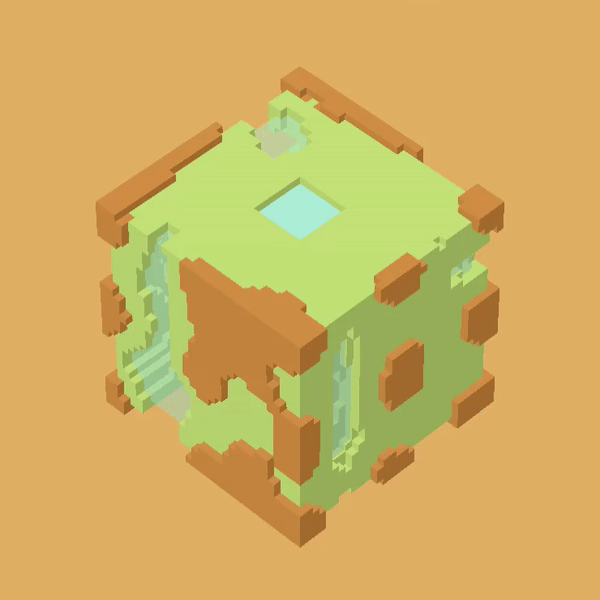
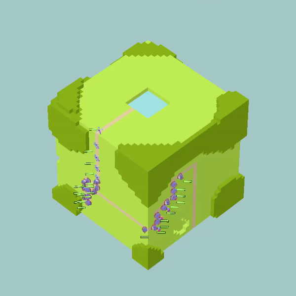
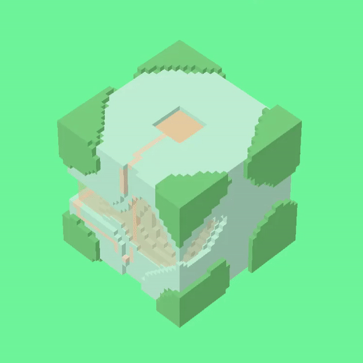
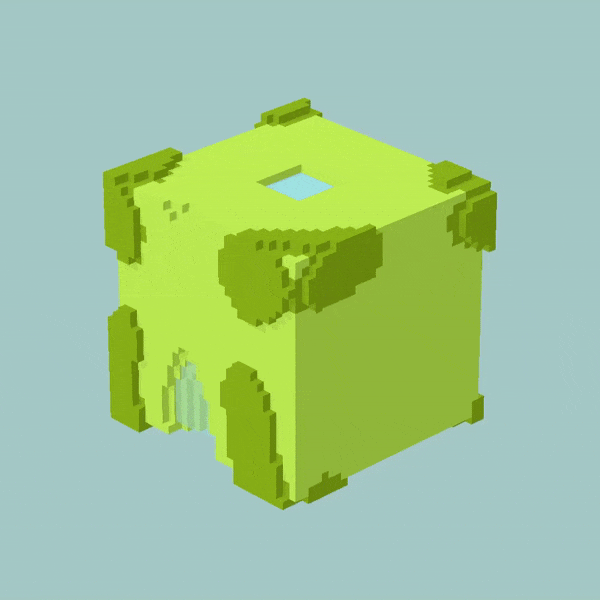

Pond Platoon
Engine:
Unity
Size of the team:
6
Time:
4 months
My role:
Programmer
Pond Platoon was developed for a university degree subject. The team
consisted of 6 people: an artist, two game designers, two game programmers,
and a project manager. We had four months to build a casual browser game,
although we still had other classes, so we couldn't spend 100% of our time
working on this.
- I implemented the main mechanics of the game.
- I created a system to generate procedural worlds and implemented a path-finding algorithm for the enemies.
- I learnt a lot about teamwork and collaborating with a multidisciplinary team.
- I assisted the art team in creating visually appealing visual effects like particles or animations and the overall look and feel of the game.



Building the procedurally generated worlds meant having to learn about 3D
Perlin noise and generating voxel meshes. Also, having infinite worlds
required building an enemy AI capable of traveling through them. The default
pathfinding in Unity didn't quite work for this application, so I built a
path-finding system from scratch, using the A* algorithm.



Watch the trailer above or visit Itch.io
to play it for free.